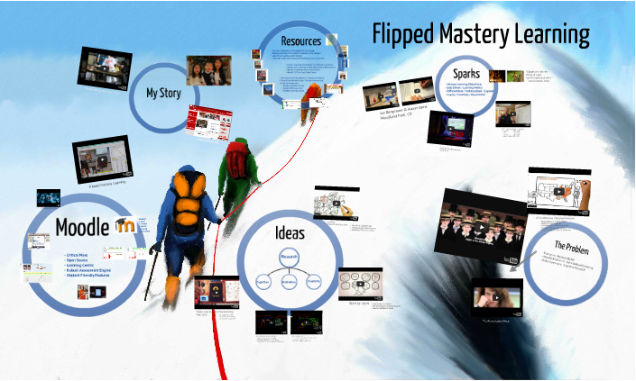
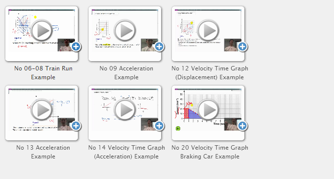

Courses offered at
IIT Rice Campus; Wheaton IL
Note
Attendees will be responsible for bringing or going out for lunch. Illinois Institute of Technology Rice Campus is located across the street from Danada Square, which has several places that students can walk to for lunch.
June 16-July 19, 2014
All courses are held from 9:00 AM to 3:00 PM.
Blended Flipped Learning Quickstart Course
Session Date:
Monday, June 16
Description:
Ever wish you could clone yourself in the classroom, or be in two places at once? Now you can using free online tools to build your own blended course to supplement and enhance what you already do face-to-face! Hit the ground running in the fall and create a learning environment where students can continue to learn beyond your classroom walls using technologies successful employed by K-12 schools, Fortune 500 companies, universities, hospitals, firefighters, and municipal government institutions!
Learn how to harness powerful screencasting tools to build a custom video library of tutorials (your very own Khan Academy!), and harness the world’s #1 Learning Management System (LMS), Moodle. Moodle is the world’s #1 LMS used by over 60+ million students world-wide at over 65,000+ institutions—as a free and open-source platform, teachers from around the world can now build, collaborate, and share content to leverage a proven learning management system to differentiate, assess, and make student learning as personalized as possible! Moodle is easy to use for any instructor wishing to get started with a basic online presence, but is flexible enough and powerful enough to grow with you into the future with its robust community of users and developers world-wide.
Learn how to get started with building your course using the built in editing and layout tools to organize your resources and activities, as well as practical tips on putting it all together to leverage your content for maximizing learning. Harness a modern LMS platform that has the right technologies built in that matter, such as responsive web design which fluidly adapts content to any screen size for elegant course design and consistent, convenience of access for the end-user and AJAX editing (allows you to drag-and-drop for editing course content and updating gradebooks on the fly without cumbersome clicks or web forms).
Participants will also be provided with a year of server hosting to help them get going on transforming their classrooms from the current factory model of education to a truly personalized and flexible learning environment!
Instructors Bios: Joseph Liaw and John Melone
see online presentation
Differentiation & Assessment in Moodle
Session Date:
Tuesday, June 17Description:
Using Moodle, the world’s #1 Learning Management System, participants will learn hands on tips and tricks to design effective courses to maximize learning! We will explore how to use robust quiz options, discussion forums, glossaries, incorporating student-generated content, conditional activities, personalized learning paths, and “gamifying” your course using certificates and badges to increase motivation and achievement. Incorporate mastery learning into your courses where students can retake(!) summative assessments using powerful quizzing tools and dynamic feedback options. Open discussion and collaboration time will be built in for participants to exchange ideas, tools, and pedagogy.
Instructors Bios: Joseph Liaw and John MeloneVimeo Presentation
Advanced Moodle Course Design
Session Date:
Wednesday, June 18
Description:
Explore using free online tools to build effective blended learning environments in a hands-on workshop to help you hit the ground running next fall! As a continuation of the first workshops, participants will have the opportunity to incorporate instructional design tips, explore mobile apps and themes for Android and iOS (Apple), beautify courses with nifty interactive jQuery sliders, run meaningful reports and logs on student time-on-task and learning metrics, as well as have open collaboration and discussion time to further exchange ideas, tools, and pedagogy on making blended learning effective in your classroom.
Instructors Bios: Joseph Liaw and John MeloneLinear Motion Gallery
Advanced Moodle Design and Site Administrator Training
Session Date:
Thursday, June 19Description:
Participants will learn how to supercharge their Moodle learning platform by using a few of the great plugins that are freely available for Moodle including plugins like the Open University’s question types, sophisticated quizzing interactions with drag-n-drop question format, Grid course format, and the Sharing Cart plugin. For those interested, learn how to use a few simple Linux commands to install plugins to explore a few of the hundreds of freely available extensions to make your Moodle even better for you and your students! Learn how to deliver content in HTML5 (mobile-friendly) formats, embed content from other sites, integrate Google docs and forms, and extend Moodle with plugins, modules, question types, and course formats.
Instructors Bios: Joseph Liaw and John Melone
Example of HTML5 video box playable on Android and iOS
View Larger Map